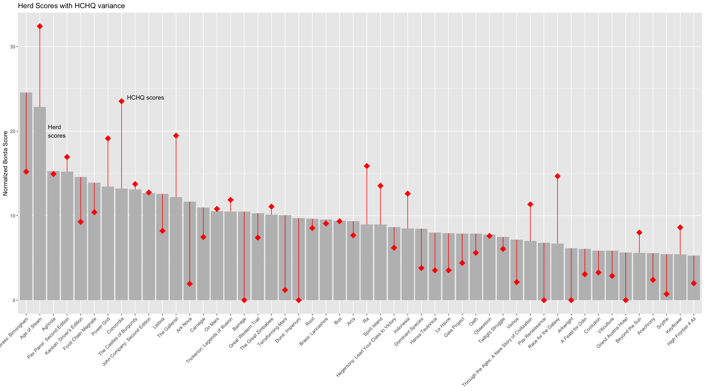
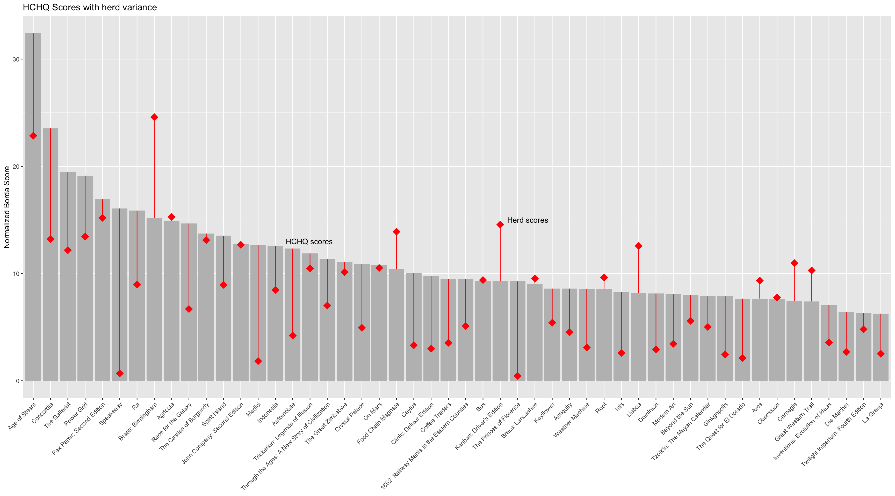
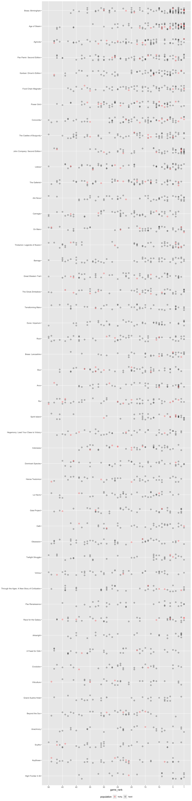

source("hc.R")
# this code is very duplicative to that in hc.R, but it isn't the third strike
hchq_rankings <- read_csv("hchq_rankings_deidentified.csv", col_types = list(bgg_id = col_character())) |>
mutate(population="hchq")
n_hchq_voters <- hchq_rankings |>
select(identifier) |>
distinct() |>
nrow()
hchq_ranked_games <- hchq_rankings |>
group_by(bgg_id) |>
summarize(
borda_50 = sum(points), # total number of points
nb_50 = borda_50 / n_hchq_voters # points normalized by dividing by number of voters
) |>
arrange(desc(borda_50)) |>
mutate(hchq_rank = min_rank(desc(borda_50)))
hchq_top_50_games <- hchq_ranked_games |>
filter(hchq_rank <= 50) |>
left_join(games, by = 'bgg_id')
hchq_top50_rankings <- hchq_rankings |>
inner_join(hchq_top_50_games, by = 'bgg_id') |>
left_join(games, by="bgg_id") |>
arrange(hchq_rank)Lets compare the overall scores between herd and HCHQ. To compare them I’ll use the normalized borda scores. The borda score is a fancy name for a calculation that sums each ranking of 50: giving the top rated game 49 points and the bottom rated 0. So for the herd the borda score of Age of Steam was 3199. To compare the 140 members of the herd to 15 members of the HCHQ group, I divided by that membership. So Age of Steam ended up with a score of 22.8 (3199/40) for the herd and 32.4 (486/15) for HCHQ. Now I have comparable numbers I can plot the herd’s top 50 and show the variance to HCHQ’s top 50.
herd_top_50_bar_data <- herd_top_50_games |>
left_join(hchq_ranked_games, by = "bgg_id", suffix = c("_herd", "_hchq")) |>
arrange(herd_rank) |>
select(bgg_name, nb_50_herd, nb_50_hchq) |>
pivot_longer(cols = !bgg_name, names_to = "population", values_to = "nb_50", names_prefix = "nb_50_") |>
mutate(nb_50 = replace_na(nb_50, 0))
herd_top_50_bar_data |>
ggplot(aes(fct_inorder(bgg_name), nb_50))+
geom_col(data = ~ filter(.x, population == "herd"), fill = "grey") +
geom_point(data = ~ filter(.x, population == "hchq"), shape = 18, color = "red", size = 5) +
geom_line(aes(group = bgg_name), color = "red") +
annotate(geom = "text", x=8.4, y=24, label="HCHQ scores", hjust = "left") +
annotate(geom = "text", x=2.6, y=20, label="Herd\nscores", hjust = "left") +
labs(y="Normalized Borda Score", x = NULL, title="Herd Scores with HCHQ variance") +
theme(axis.text.x = element_text(angle = 45, hjust = 1,vjust = 1), legend.position = "bottom")  And here’s the reverse perspective, the HCHQ top 50 compared with herd’s scores.
hchq_top_50_bar_data <- hchq_top_50_games |>
left_join(herd_ranked_games, by = "bgg_id", suffix = c("_hchq", "_herd")) |>
arrange(hchq_rank) |>
select(bgg_name, nb_50_herd, nb_50_hchq) |>
pivot_longer(cols = !bgg_name, names_to = "population", values_to = "nb_50", names_prefix = "nb_50_") |>
mutate(nb_50 = replace_na(nb_50, 0))
hchq_top_50_bar_data |>
ggplot(aes(fct_inorder(bgg_name), nb_50))+
geom_col(data = ~ filter(.x, population == "hchq"), fill = "grey") +
geom_point(data = ~ filter(.x, population == "herd"), shape = 18, color = "red", size = 5) +
geom_line(aes(group = bgg_name), color = "red") +
annotate(geom = "text", x=28.4, y=15, label="Herd scores", hjust = "left") +
annotate(geom = "text", x=15.6, y=13, label="HCHQ scores", hjust = "left") +
labs(y="Normalized Borda Score", x = NULL, title="HCHQ Scores with herd variance") +
theme(axis.text.x = element_text(angle = 45, hjust = 1,vjust = 1), legend.position = "bottom")  I can also show how ratings from HCHQ fitted into the strip chart for distribution that I showed for the herd’s ratings
combined_herd_top_50_rankings <- bind_rows(herd_top50_rankings,
hchq_rankings |>
semi_join(herd_top_50_games, by = "bgg_id"))
# combined_herd_top_50_rankings |> filter(bgg_id == "177736")
combined_herd_top_50_rankings |>
arrange(desc(herd_rank)) |>
ggplot(aes(game_rank, fct_inorder(bgg_name), color=population)) +
geom_jitter(height=0.2, width=0, size = 2, shape=1) +
scale_color_manual(values = c("red", "black")) +
scale_x_reverse(limits = c(50,1), breaks = c(1, 5, 10, 15, 20, 25, 30, 35, 40, 45, 50), minor_breaks=NULL) +
theme(legend.position = "bottom") +
labs(y=NULL)